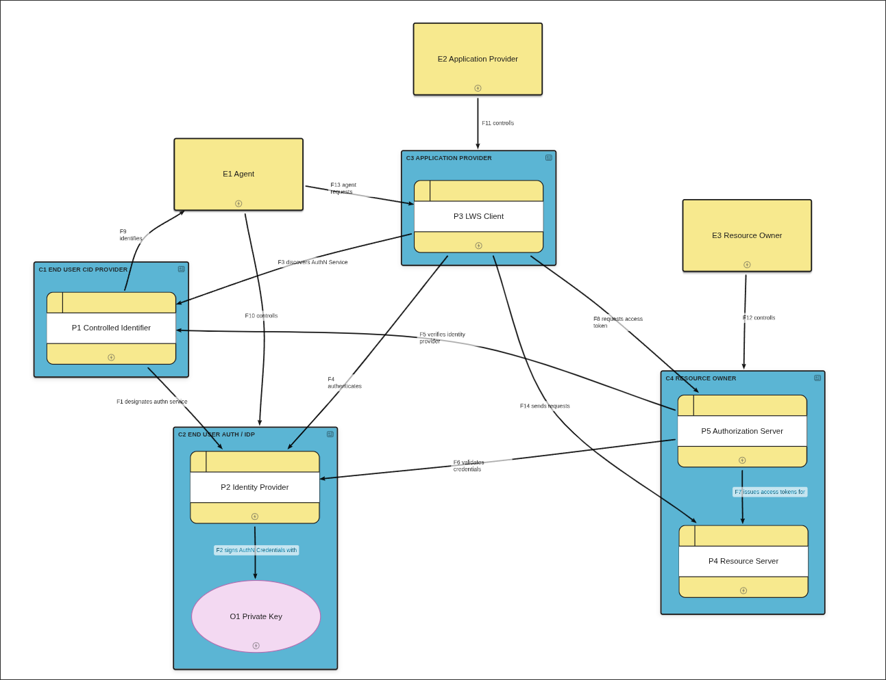

This document describes the Threat Modelling of LWS.
This is a work-in-progress at the moment. It is not yet complete, but each presented threat is carefully considered.
Threat modeling is a vital part of specification development.
This document intends to create a comprehensive view of threats in LWS systems. It is built on top of https://github.com/LegReq/respec-threats/tree/main
Linked Web Storage (LWS) enables agents to securely store and share data through a network of interoperable storage providers. Identity is rooted in controlled identifier documents (CIDs), and access is mediated through authorization servers using authentication credentials.
This threat model considers the core LWS architecture: three external entities (User, Application Admin, and Storage Controller), four containers (the CID Provider, the User Authorization Server, the Application Provider, and the LWS Storage), and the data flows connecting them.

This diagram models the core interactions in an LWS system where authentication uses CID Documents.
An agent (E1) controls both their CID Document (P1) and their User Authorization Server (P2). The CID Document designates (F1) which User Authorization Server(s) handle authentication. The User Authorization Server uses the User's private key (O1) to sign authentication credentials.
An LWS Client (P3), deployed by an Application Admin (E2), first discovers (F3) the User Authorization Server by reading the CID Document. It then obtains (F4) an authentication credential from that User Authorization Server. The User interacts (F13) with the LWS Client to initiate these flows.
To access resources, the LWS Client exchanges (F8) its authentication credential for an access token at the Resource Authorization Server (P5). That Resource Authorization Server independently discovers (F5) the User Authorization Server via the CID Document and fetches (F6) the public verification method to validate the credential. The LWS Client then uses the access token to access (F14) LWS resources hosted by the LWS Server (P4).
The Storage Controller (E3) specifies the Resource Authorization Server and may determine access control policies for the LWS Storage.
note:We did not yet model potential attackers apart from the actors already existed, as over-characterizing attackers can lead to over complication or analysis bias.
The CID Provider (C1) and User Authorization Server (C2) are modeled separately, though in practice they may be provided by the same service. The Application Provider (C3) may deliver the LWS Client as a web application, a native app, or a server-side process. The LWS Storage (C4) encompasses both the LWS Server hosting LWS resources and its Resource Authorization Server — these are modeled as separate components because they may be operated independently.
This threat model focuses on the LWS protocol layer. Threats to underlying transport security (TLS), DNS, and the physical or operating-system layers are out of scope except where they directly enable attacks on LWS-specific flows.
| E1 Agent | An agent who the LWS Client represents; the User is identified by their CID Document, which specifies basic User information, and the User Authorization Server(s) that proves the User's identity. |
| E2 Application Provider | An agent responsible for developing, deploying or configuring an LWS Client that accesses resources on behalf of Users. |
| E3 Resource Owner | An agent that controls all resources in an LWS Storage. The Storage Controller specifies the Resource Authorization Server, and may determine the Access Control policies for Resources in the LWS Storage. |
| C1 End User CID Provider | The service where the User stores their CID Document, which designates the User Authorization Server(s) that prove the User's identity. |
| C2 End User Auth / IdP | The service that proves the User's identity by issuing authentication credentials signed with the User's private key. |
| C3 Application Provider | The service provider that develops and operates an LWS Client, which accesses LWS resources on behalf of the User. |
| C4 Resource Owner | The storage system where the User's LWS resources are hosted, managed by a Resource Authorization Server that validates authentication credentials and issues access tokens. |
| P1 Controlled Identifier | Process managing the User's CID Document, which points to the User's chosen User Authorization Server(s). |
| P2 Identity Provider | Process acting as the User's authorization server and issuer, which issues authentication credentials signed with the User's private key, proving the User's identity. |
| P3 LWS Client | An LWS Client process that discovers the User Authorization Server via the CID Document, obtains an authentication credential, and accesses protected LWS resources on behalf of the User. |
| P4 Resource Server | An LWS Server process hosting an LWS Storage that serves the User's LWS resources, accepting access tokens issued by the Resource Authorization Server. |
| P5 Authorization Server | The authorization server for an LWS Storage. Validates authentication credentials by fetching the User's public verification method from their User Authorization Server, and issues access tokens for Resources in the LWS Storage. |
| O1 Private Key | The User's private key, held by the User Authorization Server and used to sign authentication credentials. |
| F1 designates authn service | The CID Document designates which User Authorization Server(s) handle authentication for the User. |
| F3 discovers AuthN Service | The LWS Client reads the User's CID Document to discover the User Authorization Server endpoint. |
| F4 authenticates | The LWS Client requests and receives an authentication credential from the User Authorization Server. |
| F5 verifies identity provider | The Resource Authorization Server reads the User's CID Document to discover the User Authorization Server for verifying authentication credentials. |
| F6 validates credentials | The Resource Authorization Server fetches the User's public verification method from their User Authorization Server to verify an authentication credential. |
| F8 requests access token | The LWS Client presents its authentication credential to the Resource Authorization Server in exchange for an access token. |
| F13 agent requests | The User interacts with an LWS Client to access and manage their LWS resources. |
| F14 sends requests | The LWS Client uses an access token to read and write LWS resources in the LWS Storage on behalf of the User. |
The agent who the LWS Client represents. The User is identified by their CID Document, which specifies basic User information and the User Authorization Server(s) that prove the User’s identity. LWS separates identity, authentication, and storage, so the User independently chooses their CID Provider, User Authorization Server, and LWS Storage provider(s).
The User’s security interest is ensuring that their identity is only operationalized by the LWS Clients they authorize, for the period and purpose of their own interests. They may access their own LWS Storage, or other Users’ LWS Storages, meaning the Storage Controller can be the same as or different from the User, leading to different security interests between them. Users may also have widely varying levels of technical expertise.
The agent responsible for developing, deploying, or configuring an LWS Client that accesses LWS resources on behalf of Users. The LWS Client relies on LWS resources in LWS Storages, while it may perform additional actions on them, such as caching or further processing.
Ideally, the Application Admin would ensure the LWS Client complies with all LWS protocol specifications and does not perform malicious or stealthy actions on the retrieved data. In practice, the Application Admin does not inherently have a positive security interest — their trustworthiness depends on whether Users trust and utilize the LWS Client they manage. From a threat modeling perspective, the LWS Client must be treated as potentially untrusted, even when acting on behalf of the User.
The agent that controls all resources in an LWS Storage. The Storage Controller specifies the Resource Authorization Server and may determine access control policies for LWS resources in that LWS Storage. A typical example of the Storage Controller is the User themselves; however, Users may also access LWS resources managed by other Storage Controllers.
The Storage Controller’s security interest is in ensuring the security of the LWS resources — that only trusted or authorized Users and LWS Clients can access them. That is typically accomplished by the Resource Authorization Server correctly validating authentication credentials and issuing access tokens only for authorized access, access control policies being correctly enforced, and the LWS resources under their control being protected from unauthorized access or modification.